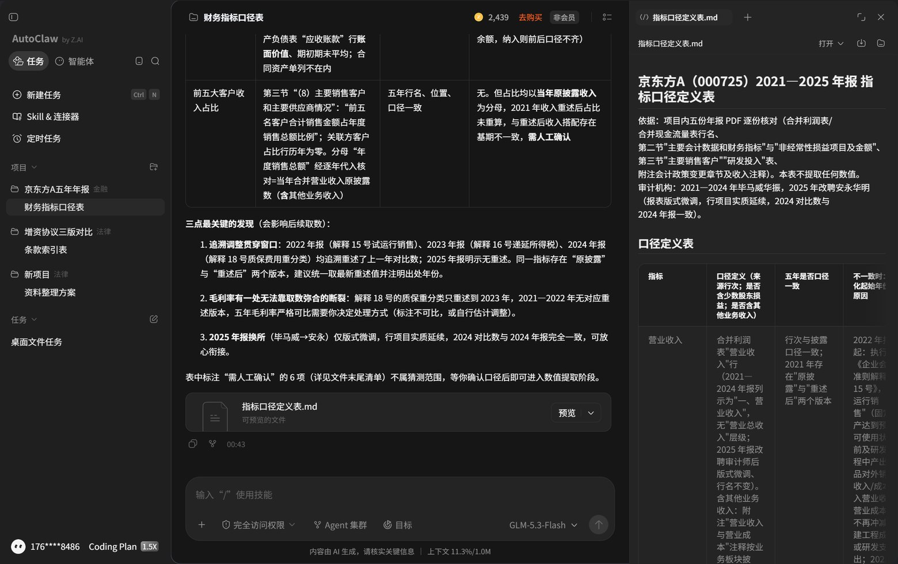
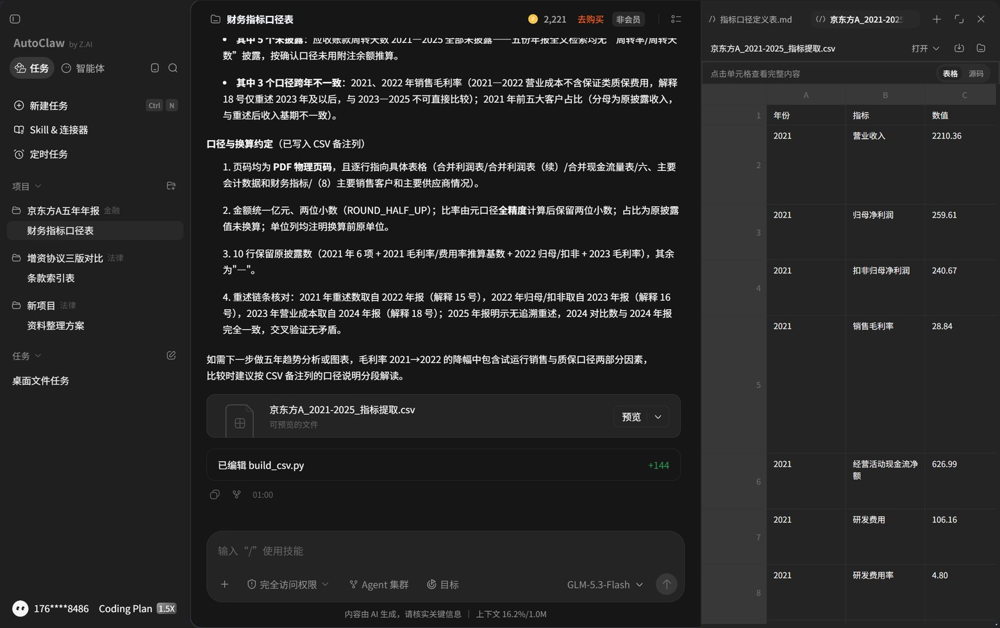
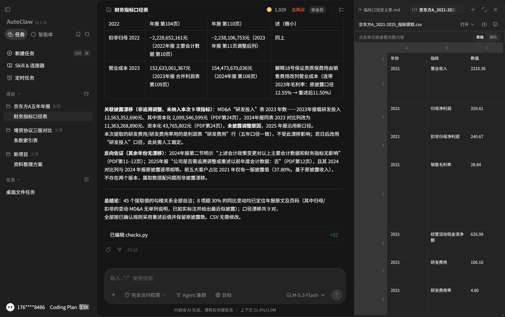

01 任务背景
投委会要的是能拿去问的数，不是一个看起来很全的表。
要在一周内对一家重资产制造业公司形成初步判断，手上有连续五年的年度报告 PDF，最短一份 227 页，最长一份 300 页。人工做的做法是打开"主要财务数据"章节，一个数一个数抄进 Excel，再回头对口径——很多坑就在这：京东方这五年正好踩中三次会计政策变更，同一年"营业收入"能有两个版本（2021 年原披露 2,193.10 亿，2022 年报重述后 2,210.36 亿），"归母净利润"和"净利润"差着少数股东损益（2022 年一个是 75.51 亿，一个是 −17.37 亿）。
所以这个任务里，模型负责取数与对齐，人负责定口径与抽查。取数快但不留出处，等于没做。
交付物
指标口径定义表 · 统一口径的五年 CSV 底稿（45 行，含年报页码与表名）· 趋势与结构图 · 三情景估值区间 · 抽查核验记录。
验收标准
任意一个数字，能在 30 秒内翻到年报原文那一页。做不到就退回重取。
02 使用过程与指令
四条指令按顺序发，第二条之前必须先有第一条的口径表。下面每一段都是实际发出去的原文；指令 2 前面还夹了一条我对方口径的书面确认，那条才是让取数稳定的关键。
- 先要口径定义，再要数让模型输出每个指标的取数口径（用哪张报表、是否含少数股东、是否含其他业务），并列出五年年报中该字段出现的章节页码。这一步人工确认后再往下。
- 提数，强制带出处每个数值后面必须跟"年报 + 页码 + 表名"。给不出处的数值一律视为无效，不接受"根据公开信息"这类表述。
- 交叉核验用第二来源（如业绩快报、招股说明书或券商研报）比对同一指标，差异超过 1% 的单独列出并说明原因。
- 最后才做测算看板与估值只在数据被确认后生成，参数（增速、倍数）单独列出，便于别人换假设重跑。
指令 1口径定义表
项目内有公司 2021—2025 年年度报告。先不要提取任何数值。 输出指标口径定义表，行：营业收入｜归母净利润｜扣非归母净利润｜销售毛利率｜经营活动现金流净额｜研发费用｜研发费用率｜应收账款周转天数｜前五大客户收入占比。 列：口径定义（写明取自哪张报表的哪一行，是否含少数股东损益、是否含其他业务收入）｜五年是否口径一致｜若不一致，写明从哪一年开始变化及原因（会计政策变更/报表列报调整）。 不确定的写"需人工确认"，不要猜。
模型这一轮的完整输出（10,980 字节，含口径表、八条政策变更清单、取数版本建议、六项需人工确认）原样存档：指标口径定义表.md · 模型导出原件。下面指令 1.5 的六条决定，就是逐条对着这份文件拍的。
指令 1.5把口径拍板回给模型
先确认你列的六项人工确认，按下面口径执行： 1. 2021 年取 2022 年报重述后数；2022 年归母与扣非取 2023 年报重述后数；2023 年营业成本取 2024 年报重述后数。出处写重述所在的那份年报与页码，同时保留原披露数一列。 2. 毛利率按各年合并利润表营业收入与营业成本自行计算，保留两位小数，并在出处列注明"推算值"；2021—2022 无质保费用重述版本，直接标注口径断裂。 3. 研发费用率＝利润表"研发费用"行／营业收入，费用化口径。 4. 应收账款周转天数若年报未直接披露，填"未披露"，不要自己用附注余额推算。 5. 前五大客户占比用当年原披露收入作分母，标注与重述后收入存在基期不一致。
模型在口径表末尾列了六项「需人工确认」，其中「应收账款周转天数的计算约定」它给了三个选项（365／360、平均／期末、是否含应收票据与应收款项融资）。我没有挑一个约定让它算，而是直接定成"年报没披露就写未披露，不要用附注余额自己推"。结果这一列五年全空——我事后用关键词扫了五份 PDF 全文，"周转天数"确实一次都没出现，所以这个空是挣来的，不是漏的。
指令 2带出处的数据提取
按已确认的口径表，逐年提取上述指标，输出 CSV 结构：年份｜指标｜数值｜单位｜年报名称｜页码｜原文表格名称。 要求： 1. 每个数值必须有页码，且页码指向"合并利润表/合并资产负债表/主要会计数据"这类具体表格，不接受只写"年报第3页"； 2. 金额统一为亿元、比率统一为百分数，单位列写明换算前原单位； 3. 某年某指标在年报中未披露的，填"未披露"，不要用相邻年数据推算，也不要用券商研报补数； 4. 结尾报告：共提取 N 个数值，其中 M 个未披露、K 个口径跨年不一致。
指令 3交叉核验与异常提示
对提取结果做三项自检并输出结论： 1. 勾稽关系：归母净利润与扣非净利润之差、毛利率与营收成本是否自洽； 2. 趋势异常：单年同比变动超过 30% 的指标，逐条给出年报中管理层讨论与分析的原文解释，并标注页码； 3. 口径漂移：同一指标在不同年份年报中数值不一致的（如追溯调整），列出两个值与各自页码，说明以哪个为准及理由。 只报事实与出处，不要给投资建议。
指令 4测算参数
基于已核验数据，给出三情景（保守／基准／乐观）的下一年度营收增速、毛利率与净利率假设， 每个假设必须写明依据：来自在手订单披露、行业增速、产能爬坡计划或历史均值，并附出处页码。 列出可比公司清单及各自 PE 取值区间，注明取值日期与数据来源。假设与结论分开陈述。
指令 4 本轮没有发出。原因是项目里只有五份年报 PDF，模型拿不到行情与可比公司市值；这条指令要成立，得先把同花顺 iFinD 或 Wind 的取值截图放进项目目录。第 04 节因此按"历史数据来自模型、假设参数由人定"来摆，PE 一列单独说明来源缺口。
assets/img/fin-01.jpg ～ fin-02.jpg
AutoClaw 桌面端 v2.3.0 · 金融分析场景 · 项目「京东方A五年年报」· 模型 GLM-5.3-Flash · 完全访问权限开启。指令 1、1.5、2、3 均按上文原样发出，未改写措辞。三轮实测消耗 725 积分（2,654 → 1,929）：口径轮 215、提数轮 218、自检轮 292；自检轮界面显示耗时 8m41s，前两轮界面已折叠，只保留产物落盘时间 00:43 与 01:00。


03 底稿数据与趋势
下面这张表就是交付物本体：可直接改，改完图与测算同步重算。
| 年份 | 营业收入 亿元 | 归母净利润 亿元 |
毛利率 % | 经营现金流净额 亿元 |
研发费用率 % | 出处（年报 · 页码） |
|---|
模型导出的原件是 45 行（九项指标 × 五年），这里只把五项画进图和表；扣非归母、研发费用绝对额、前五大客户占比与"原披露数"对照列都在 CSV 里。两件事值得注意：2021 年那一整行取的是 2022 年报里的重述后对比数，2022 年的归母、2023 年的营业成本同理，所以出处指向的是"下一份年报"；应收账款周转天数五年全部未披露，CSV 里整列留空，没有用附注余额凑一个数。
图 A营收与归母净利润
图 B毛利率与研发费用率
图由上表实时生成，未使用任何外部图表库；表中留空的年份不参与绘制。
04 三情景估值测算
假设与结论分开摆，换假设就能重跑，这是给别人复用的关键。
| 情景 | 关键假设（可编辑） | 下年营收增速 % | 净利率 % | PE 倍数 | 隐含估值 亿元 |
|---|
隐含估值 = 最新有数年份营收 × (1 + 增速) × 净利率 ÷ 100 × PE。口径为可比公司法，未做流动性、控制权溢价调整。
这一节的假设是谁定的，说清楚
增速与净利率两列不是我拍脑袋：近三年营收同比 −2.17%／+13.66%／+3.13%，均值 4.9%；归母净利率 1.46%／2.68%／2.86%，均值 2.3%；低点参照 2022 年（−19.28%、1.46%）。这三组数来自第 03 节同一张表，可复算。
PE 三档（20／25／30）是我人工设定的占位区间，没有行情来源。AutoClaw 这次只喂了五份年报 PDF，拿不到实时市值与可比公司报价，所以指令 4 要求的"可比公司清单及各自 PE 取值区间、取值日期与来源"这一项，本轮没有产出，也不该由模型编。要落地必须自己接 Wind／同花顺 iFinD 的截图，或按年报披露的同行业可比公司清单取值并写明日期。
05 抽查核验记录
45 行提取值，30 个有源数值逐个回到所指 PDF 页面扫描比对，5 项推算值另找年报独立披露对撞，5 项未披露去全文检索确认。结果：数值零处不符，页码 30/30 命中。但抓出三件必须人拍板的事，其中一件是我自己算错、模型对——见第 2 行。
| 抽查项 | 模型给出的值 | 年报原文值 · 页码 | 结果 | 处理 |
|---|
"年报原文值"一列全部来自我用 pymupdf 写的独立提取脚本（tmp/fin_extract.py），与模型走的是两条互不引用的路径；页码同为 PDF 物理页。
assets/img/fin-03.jpg
指令 3 的自检输出：上方是口径漂移 9 对的表尾（扣非归母 2022、营业成本 2023 两行可见，重述前后两个值与各自页码并列），中段是"关联披露漂移"——2024 年报把 2023 年研发投入对比数从 125.63 亿改成 113.63 亿、资本化从 21.00 亿改成 0.44 亿，未说明原因；下方是总结论与模型自写的 checks.py（+52 行）。右侧为 CSV 原件的应用内表格预览。这一轮 2026-11-07 01:07—01:15，8 分 41 秒。

06 复用方法与局限
方法可以直接搬
① 先口径后取数，两轮分开发：口径轮只花 215 积分、一个数不取，换来提数轮 45 项里 0 处口径误用；② 强制"页码 + 表名"出处：30 个有源数值逐个回到所指 PDF 页面扫描，全部命中，核验成本从小时级压到分钟级；③ 明确禁止用研报补数、禁止用相邻年推算：年报没披露的就留空，这一条直接决定了第 03 节那一列敢空着。
仍需人工
① "主要会计数据"表的调整前／调整后双列是最容易抓错的地方——我自己的复算脚本第一版就把 2022 扣非抓成调整前 −22.29 亿，模型给的是调整后 −22.38 亿，这次是模型对、我错；② 2021—2022 年没有质保费用重述版本，毛利率五年严格可比做不到，只能标注断裂；③ 2024 年报把 2023 年研发投入对比数从 125.63 亿改成 113.63 亿、未说明原因，这类"披露口径变化无解释"要人回原文判断；④ 可比公司 PE 要外部行情，本轮模型拿不到，只能人工补。
换一家公司要改的地方只有三处：口径表里的报表行名、年份列、可比公司清单。四条指令模板不动——指令 1 和 1.5 是全套可复用的，指令 1.5 里那六条决定要按新公司重新拍一遍。
07 数据源与声明
数据来源：京东方科技集团股份有限公司（000725）2021—2025 年年度报告，巨潮资讯网下载的原版 PDF（227～300 页／份，合计 1,342 页）。页码一律指 PDF 物理页码，与年报印刷页码不同——财务报表部分从"第 9 页"重新起排，例如 2024 年报合并利润表在 PDF 第 108 页、页脚印的是"108"，而"主要会计数据"在 PDF 第 11 页。核对时以页面上方表格名称定位，不靠页脚数字。
第 03 节数值由 AutoClaw 于 2026-11-07 00:43—01:15 三轮运行按第 02 节口径提取（产物落盘与界面时间一致）；第 05 节的"年报原文值"是我用 pymupdf 逐页独立复算的结果，两者对照见 模型导出原件 CSV。所有数字均为上市公司已披露历史财务数据。
本页不构成任何投资建议。第 04 节情景与 PE 为人工设定的测算演示，其中 PE 无行情来源；据此得出的任何结论须经独立复核后方可用于决策。
配套文件：← 返回作品总览 ｜ 赛道一 · 增资协议条款对比